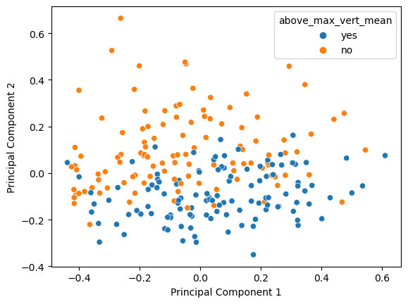
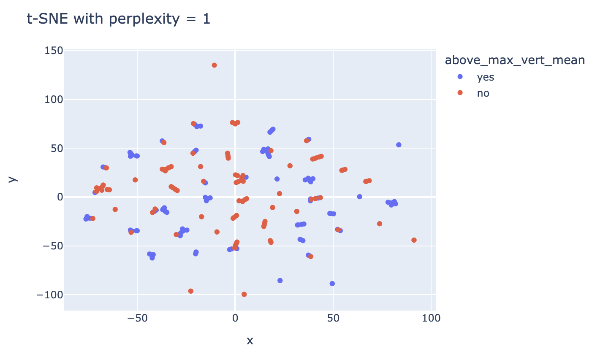
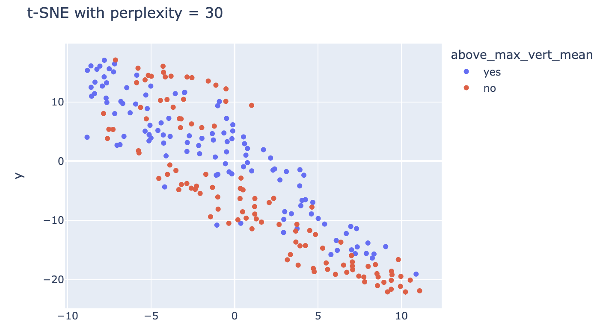
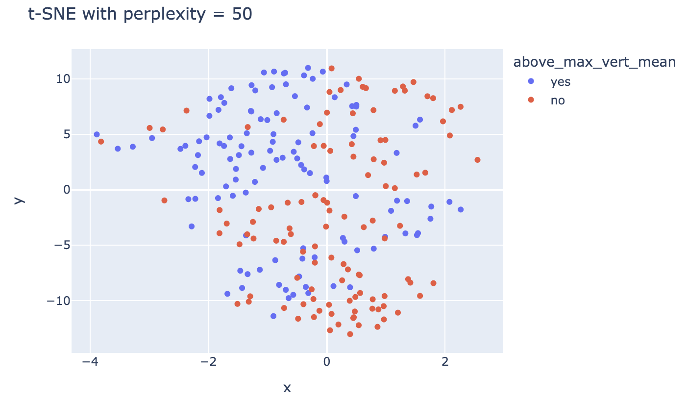

In this section, I will be performing dimensionality reduction on the NBA combine dataset without label features. Dimensionality reduction is a tool used in data analysis and machine learning to address the challenges posed by high-dimensional datasets. Dimensionality reduction methods aim to capture the essential information contained in the original dataset while reducing the number of features. By transforming the data into a lower-dimensional representation, these techniques can enhance computational efficiency, alleviate the curse of dimensionality, and can reveal underlying patterns or structures in the data. I will be performing dimensionality reduction using PCA and t-SNE in python. PCA (Principal Component Analysis) is a statistical technique that reduces the dimensionality of high-dimensional datasets by identifying principal components through linear transformations, generating a low-dimensional representation useful for both supervised learning and data visualization. t-SNE (T-distributed Stochastic Neighbor Embedding) is a non-linear dimensionality reduction technique that visualizes high-dimensional data in a lower-dimensional space by employing a probability distribution to group similar data points together while maintaining separation between dissimilar points. By performing dimensionality reduction using both techniques, I hope to gain insights on if combine measurements can be effectively predicted, retained, and shown with reduced dimensions, and if any future insights on other combine measurements can be related to vertical jump.
Dimensionality Reduction with PCA
For Dimensionality Reduction with PCA, I first examined the eigenvalues of each feature to understand their individual contributions. Subsequently, I visualized the number of principal components against cumulative explained variance to determine the optimal number of components needed for a comprehensive representation of the data. Following this exploration, I performed PCA and created a graphical representation of the top two principal components, with ‘above_max_vert_mean’ assigned as the color variable.
Code
import jsonimport numpy as npimport pandas as pdimport matplotlib.pyplot as pltfrom numpy import linalg as LAfrom sklearn.metrics import silhouette_samples, silhouette_scorefrom sklearn.decomposition import PCAcombine_df = pd.read_csv("../../data/01-modified-data/ccleaned_NBA_combine_no_NA.csv")label_vec = combine_df["above_max_vert_mean"]drop_cols = ["Unnamed: 0", "POS", "combine_year", "Name", 'above_max_vert_mean']feature_matrix = combine_df.drop(columns= drop_cols)feature_cols = feature_matrix.columns.tolist()
/Users/tyler/anaconda3/lib/python3.10/site-packages/numpy/core/fromnumeric.py:84: FutureWarning:
In a future version, DataFrame.max(axis=None) will return a scalar max over the entire DataFrame. To retain the old behavior, use 'frame.max(axis=0)' or just 'frame.max()'
Text(0, 0.5, 'Principal Component 2')

Analysis
For the analysis PCA, it becomes apparent that ‘Height’ and ‘Weight’ exhibited the highest eigenvalues, suggesting their significance in capturing variance within the dataset. The graph illustrating the cumulative explained variance highlighted that the optimal number of principal components was three as it would sufficiently capture the majority of the dataset’s variability. Upon plotting the top two PCA components with ‘above_max_vert_mean’ as the color indicator, Principle Component 2 emerged as particularly informative. Notably, it effectively distinguished patterns based on the ‘above_max_vert_mean’ variable. Points (players) with a Principal Component 2 value of -0.1 or lower tended to exhibit an above-average max vertical jump, while those above this threshold generally had a below-average max vertical jump, with some overlap.
Dimensionality Reduction with t-SNE
For Dimensionality Reduction with t-SNE, I leveraged Plotly for visualization, assigning the ‘above_max_vert_mean’ variable as the color and showcasing ‘max vert’ and ‘name’ as hover information. I systematically explored the impact of varying perplexity values, specifically examining settings at 1, 30, and 50.
Code
from sklearn.manifold import TSNEimport seaborn as snsimport plotly.express as pximport textwrapmywrap =lambda x: textwrap.wrap(x, width=60)X = feature_matrixX_embedded = TSNE(n_components=2, learning_rate='auto',init='random', perplexity=1).fit_transform(X)tsne_df = pd.DataFrame(X_embedded, columns=['x','y'])tsne_df['Name'] = combine_df['Name'] tsne_df['MAX.VERTICAL'] = combine_df['MAX.VERTICAL']tsne_df['above_max_vert_mean'] = combine_df['above_max_vert_mean']tsne_df['above_max_vert_mean'] = tsne_df['above_max_vert_mean'].map({1: 'yes', 0: 'no'})tsne_df['Name'] = tsne_df['Name'].apply(lambda x: x iftype(x) ==strelse'')tsne_df['Name'] = tsne_df['Name'].apply(lambda x: '<br>'.join(mywrap(x)))print(tsne_df)fig = px.scatter(tsne_df, x='x', y='y', hover_data=['Name', 'MAX.VERTICAL'], color ='above_max_vert_mean')fig.update_layout(title_text='t-SNE with perplexity = 1')fig.show()
x y Name MAX.VERTICAL above_max_vert_mean
0 -15.465197 14.879143 Darius Bazley 37.0 yes
1 -12.802845 -0.848919 Jordan Bone 42.5 yes
2 19.057974 -10.679698 Brian Bowen II 35.5 no
3 0.229881 -49.098835 Ky Bowman 33.0 no
4 16.030859 47.432117 Ignas Brazdeikis 36.5 yes
.. ... ... ... ... ...
222 2.905999 16.738895 James Southerland 32.0 no
223 63.500896 0.325026 Adonis Thomas 40.5 yes
224 1.432116 15.660797 Deshaun Thomas 32.0 no
225 43.888191 41.715740 Jeff Withey 29.0 no
226 -20.255779 -58.241734 Cody Zeller 37.5 yes
[227 rows x 5 columns]
Unable to display output for mime type(s): application/vnd.plotly.v1+json
Screenshot of plottly graph, as it would not render in quarto 
Code
from sklearn.manifold import TSNEimport seaborn as snsimport plotly.express as pximport textwrapmywrap =lambda x: textwrap.wrap(x, width=60)X = feature_matrixX_embedded = TSNE(n_components=2, learning_rate='auto',init='random', perplexity=30).fit_transform(X)tsne_df = pd.DataFrame(X_embedded, columns=['x','y'])tsne_df['Name'] = combine_df['Name'] tsne_df['MAX.VERTICAL'] = combine_df['MAX.VERTICAL']tsne_df['above_max_vert_mean'] = combine_df['above_max_vert_mean']tsne_df['above_max_vert_mean'] = tsne_df['above_max_vert_mean'].map({1: 'yes', 0: 'no'})tsne_df['Name'] = tsne_df['Name'].apply(lambda x: x iftype(x) ==strelse'')tsne_df['Name'] = tsne_df['Name'].apply(lambda x: '<br>'.join(mywrap(x)))print(tsne_df)fig = px.scatter(tsne_df, x='x', y='y', hover_data=['Name', 'MAX.VERTICAL'], color ='above_max_vert_mean')fig.update_layout(title_text='t-SNE with perplexity = 30')fig.show()
x y Name MAX.VERTICAL above_max_vert_mean
0 -1.093742 -2.381273 Darius Bazley 37.0 yes
1 -8.359571 13.322024 Jordan Bone 42.5 yes
2 -5.752082 1.750604 Brian Bowen II 35.5 no
3 -4.980168 14.329522 Ky Bowman 33.0 no
4 3.972339 -7.520104 Ignas Brazdeikis 36.5 yes
.. ... ... ... ... ...
222 1.210846 -8.935663 James Southerland 32.0 no
223 6.964239 -11.026214 Adonis Thomas 40.5 yes
224 1.204727 -7.681103 Deshaun Thomas 32.0 no
225 1.046053 -11.420521 Jeff Withey 29.0 no
226 6.691407 -12.222388 Cody Zeller 37.5 yes
[227 rows x 5 columns]
Unable to display output for mime type(s): application/vnd.plotly.v1+json
Screenshot of plottly graph, as it would not render in quarto 
Code
from sklearn.manifold import TSNEimport seaborn as snsimport plotly.express as pximport textwrapmywrap =lambda x: textwrap.wrap(x, width=60)X = feature_matrixX_embedded = TSNE(n_components=2, learning_rate='auto',init='random', perplexity=50).fit_transform(X)tsne_df = pd.DataFrame(X_embedded, columns=['x','y'])tsne_df['Name'] = combine_df['Name'] tsne_df['MAX.VERTICAL'] = combine_df['MAX.VERTICAL']tsne_df['above_max_vert_mean'] = combine_df['above_max_vert_mean']tsne_df['above_max_vert_mean'] = tsne_df['above_max_vert_mean'].map({1: 'yes', 0: 'no'})tsne_df['Name'] = tsne_df['Name'].apply(lambda x: x iftype(x) ==strelse'')tsne_df['Name'] = tsne_df['Name'].apply(lambda x: '<br>'.join(mywrap(x)))print(tsne_df)fig = px.scatter(tsne_df, x='x', y='y', hover_data=['Name', 'MAX.VERTICAL'], color ='above_max_vert_mean')fig.update_layout(title_text='t-SNE with perplexity = 50')fig.show()
x y Name MAX.VERTICAL above_max_vert_mean
0 -2.220060 -0.818886 Darius Bazley 37.0 yes
1 -1.269619 9.427421 Jordan Bone 42.5 yes
2 0.451856 2.982492 Brian Bowen II 35.5 no
3 0.662682 9.162947 Ky Bowman 33.0 no
4 0.986679 -4.249359 Ignas Brazdeikis 36.5 yes
.. ... ... ... ... ...
222 -0.605657 -4.003376 James Southerland 32.0 no
223 -1.130381 -7.218080 Adonis Thomas 40.5 yes
224 -0.011604 -3.328646 Deshaun Thomas 32.0 no
225 -1.473130 -4.921151 Jeff Withey 29.0 no
226 -1.336228 -7.614920 Cody Zeller 37.5 yes
[227 rows x 5 columns]
Unable to display output for mime type(s): application/vnd.plotly.v1+json
Screenshot of plottly graph, as it would not render in quarto 
Analysis
At a low perplexity (1), the t-SNE embeddings revealed distinct clusters, particularly 3-4 players with above-average vertical jumps forming isolated groups, while players with below-average vertical jumps clustered separately. Intriguingly, numerous clusters comprised players with identical ‘above_max_vert_mean’ values. Shifting to perplexity 30, the resulting distributions and clusters displayed variability with each code execution. Notably, it seemed that one feature often captured a player’s general size and build, while the other tended to represent their jumping ability, as discerned from both graph color and player names. Extending this analysis to perplexity 50, a similar pattern persisted, albeit with data points more evenly dispersed across the plot, contributing to a nuanced understanding of the dataset’s structure and relationships.
Comparison and Conclusion
Both PCA and t-SNE were able to capture combine event results and plot players based on size and athleticism with lower dimensions. T-SNE, visualized with Plotly, revealed distinct clusters at varying perplexity values, effectively capturing nuanced relationships between players’ size, build, and jumping ability. PCA, emphasizing ‘Height’ and ‘Weight’ through eigenvalues, identified three optimal components. Principal Component 2, when plotted against ‘above_max_vert_mean,’ effectively distinguished patterns, revealing its pivotal role in delineating jump performance. There is a general trade-off between the two techniques. While t-SNE provides high-quality visualizations, it is computationally expensive and sensitive to hyperparameters, potentially leading to varied results. But with PCA being a linear method, it may struggle to capture non-linear relationships in the data. But at least for this analysis, t-SNE and PCA complemented each other well, with PCA adept at distinguishing players based on their vertical jump ability and t-SNE excelling in capturing both jumping ability and size, especially at a higher perplexity.